Physical Computing
Weekly Activity Template
Ziqi Zhou
Module 1
Activity Research
In Activity 1, I made my first attempt to use the Blink sample application for Arduino to see the full flow from code compilation to uploading to an onboard LED blink.
In Activity 2, I primarily explored how to connect an Arduino to ProtoPie Connect so that data from physical sensors could influence the digital interface. By collecting sensor data via the Arduino and then using ProtoPie Connect to transmit that data to the interactive prototype, I was able to achieve real-time interaction between physical inputs and the digital interface. This activity gave me a deeper understanding of how hardware, data, and UI/UX prototypes are connected and work together.
In this activity 3, I connected Arduino to TouchDesigner and used a potentiometer to control a circular visual effect in real time. I explored how sensor data can be transferred through serial communication and used to change digital visuals. I learned how to check Arduino data, connect basic TouchDesigner nodes, and adjust visual parameters. This helped me understand how physical inputs can create interactive visual experiences.
Activity 1
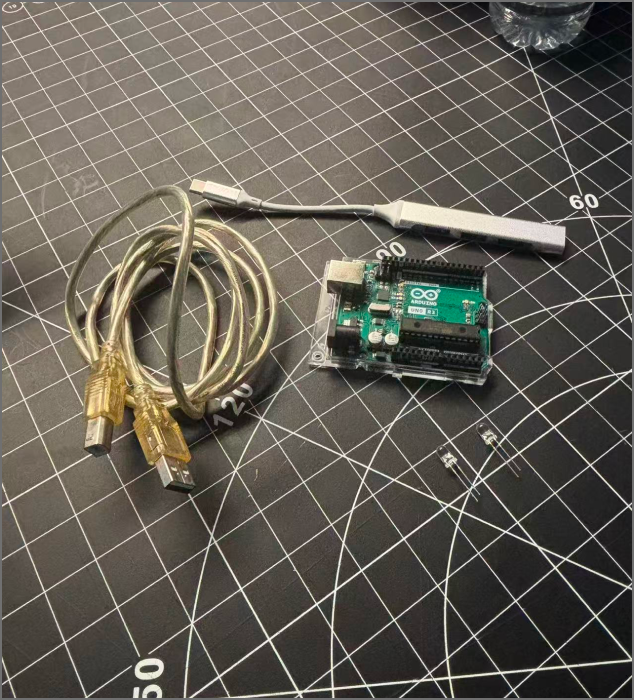
Project Video Link
">
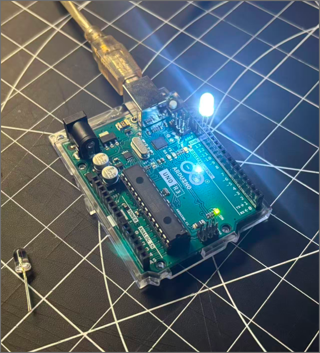

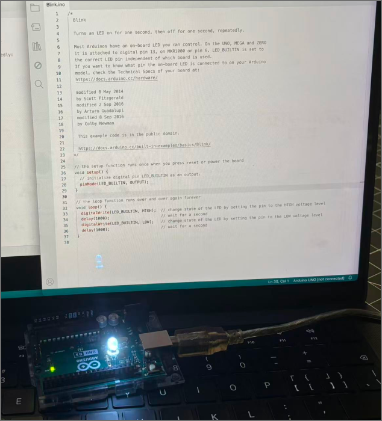
Activity 2
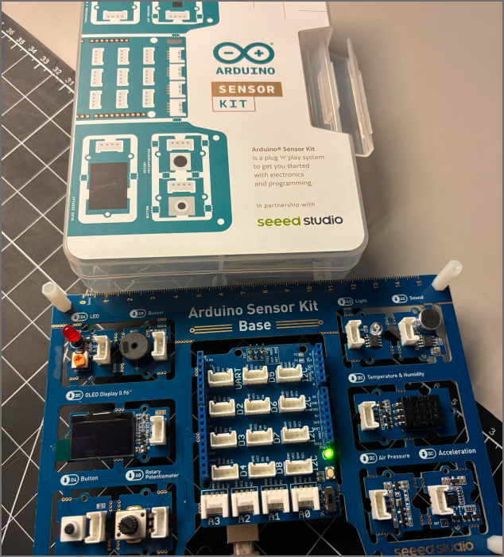
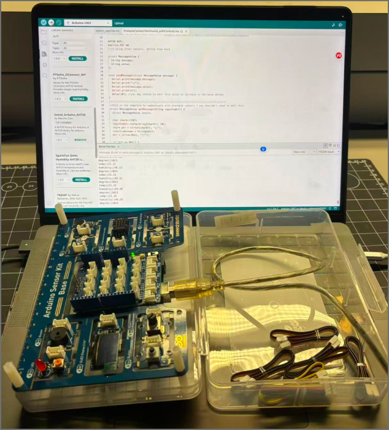

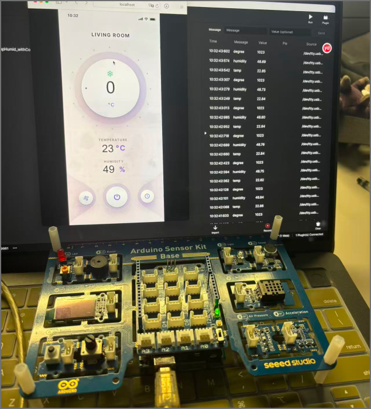

Activity 3


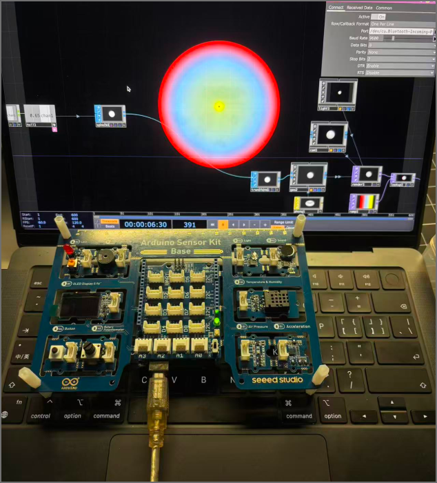

Research Activity
Consumer Trend Research
I reviewed TrendBible's home forecasts and historical interaction examples from TrendWatching to explore possible directions for my project concept. From this research, I identified two areas of interest: sensory-rich environments and intuitive physical interaction.
Category 1: Sensory-rich Environments
I reviewed TrendBible's discussion of sensory-rich and calm home environments, particularly "Texture Drenching." This encouraged me to consider how light, movement and sound could work together to shape an atmosphere.
In my project concept, I interpreted this research through a dark ocean and glowing fish. I considered a simple scene as the foundation, with animated backgrounds, music and changing fish colours as possible additions. These are my artistic interpretations of the research, rather than features directly recommended by TrendBible.
Category 2: Intuitive Physical Interaction
I also reviewed TrendBible's "Embedded Flexibility" and historical examples from TrendWatching. Stir Kinetic Desk helped me consider how physical actions and system responses could form an understandable connection.
This inspired me to explore a small number of gestures within my project concept: making a left fist to reveal the fish and moving my right hand to control the entire school. These interactions remain conceptual, and their clarity and consistency would need to be investigated through further exploration.


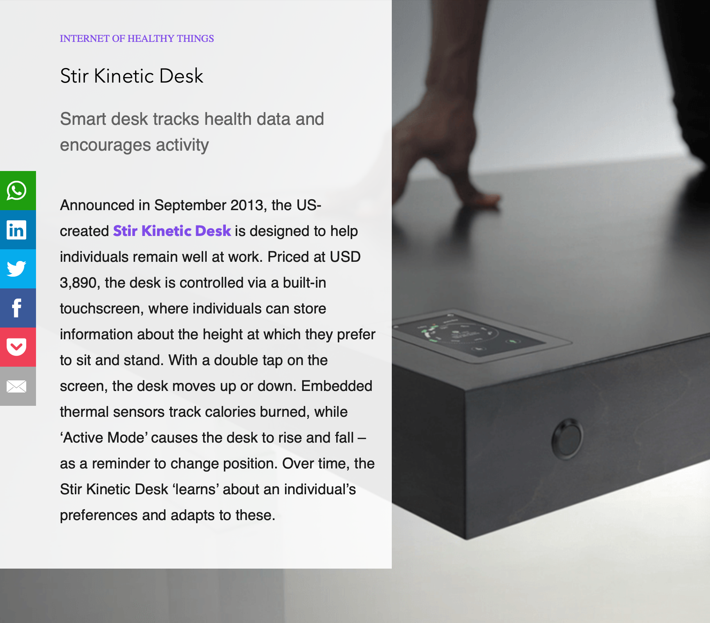
Personas Research
I developed two provisional personas based on Pew Research Center findings to consider my project concept from different perspectives. These personas are interpretations of secondary research, not interviewed individuals.
Category 1: Simplicity-oriented Technology User
Pew's research on smart speakers encouraged me to question whether more personalization and additional features always improve an experience. I developed a provisional persona who may place greater value on understandable controls and clear feedback.
This perspective influenced the structure of my concept: basic gesture interaction would form the core, while backgrounds, music and colour changes would remain supporting features for further exploration. I want these additions to enrich the experience while keeping the main interaction understandable.
Category 2: Privacy-conscious Technology User
I also researched the relationship between personal data collection and personalization. This informed a provisional persona who considers what technology senses and how that information is used.
For my project concept, this means investigating what Kinect tracks, what data TouchDesigner receives and whether the system stores any information. These questions will help me assess the technical approach and develop an accurate explanation of tracking later.

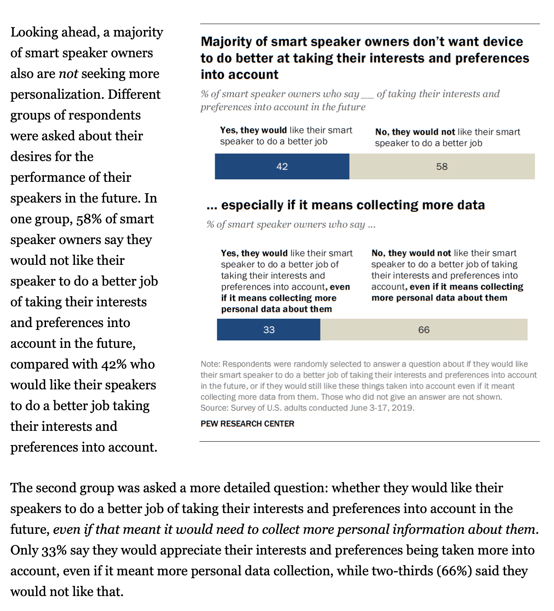

HMI Research
I reviewed How Might We resources from Nielsen Norman Group and the Interaction Design Foundation. These helped me turn research findings into open-ended questions without prescribing fish, Kinect or projection as the solution.
Category 1: Sensory Experience and Visual Feedback
I identified two areas for investigation: the relationship between physical actions and visual changes, and the balance between sensory richness and interaction clarity.
· How might we make the relationship between physical actions and visual changes easy to understand?
· How might we combine sensory elements to create an expressive atmosphere while keeping the main interaction clear?
Category 2: Learning the Interaction and Tracking Transparency
I identified two further areas: discovering unfamiliar controls and understanding the purpose of tracking.
· How might we make an unfamiliar interaction easy to discover and learn?
· How might we clearly explain what an interactive system senses and how that information is used?

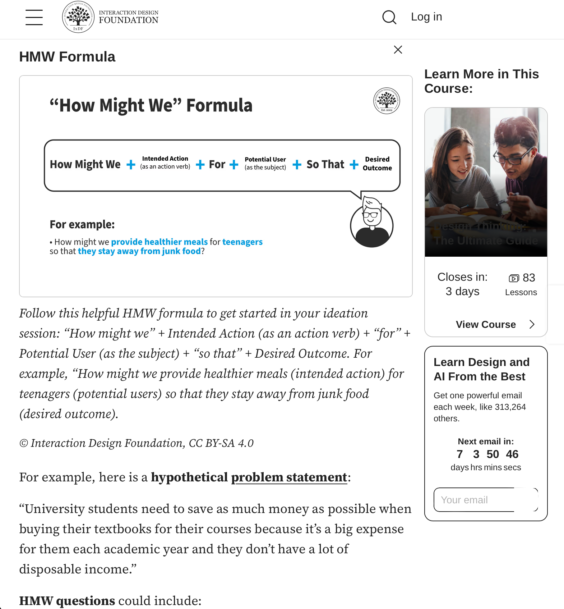

Project Path
Art Path
Based on my research, I chose the Art path as the direction for my project concept. I want to explore the relationship between my physical gestures and digital life. Through darkness and glowing fish, I hope to express a transition from hidden life to visible movement. The concept focuses on atmosphere, motion and the relationship between physical actions and a projected environment.
Category 1: Basic Gesture Interaction
My basic idea is to use Kinect to track both hands and send movement data to TouchDesigner. Making a fist with my left hand would gradually reveal glowing fish, while moving my right hand would change the position and swimming direction of the entire school. A projector would display the visuals on a wall.
The concept centres on the entire fish school responding to my movements. I want to explore gesture recognition, smooth group movement and clear visual feedback. The implementation would be adjusted according to further research and practical conditions.
Category 2: Supporting Sensory Features
Building on the basic concept, I am considering animated ocean backgrounds, atmospheric music and gradual fish-colour changes as supporting features within the same project concept.
These effects are intended to create a more dreamlike atmosphere. Whether to include them, how to combine them and how far to develop them will depend on the progress of the basic interaction.
Working Approach:
I would prefer to collaborate, exchanging ideas and combining technical and visual skills to develop the concept. If I work independently, I will explore tracking, animation and projection gradually, according to the available equipment, time and my learning progress, before considering supporting effects.
Artistic Inspiration:
Studio Roosegaarde's GLOWING NATURE inspired me to consider how physical actions can reveal luminous life. My project concept explores an artistic interpretation of this relationship through gesture tracking and digital imagery.
Current Progress and Next Steps:
I have created a concept preview and installation illustrations with AI assistance to communicate the intended experience. The combination of Kinect, TouchDesigner and projection remains a proposed technical approach requiring further exploration.
Next, I will begin translating the concept into initial experiments, exploring the basic gesture interaction and gradually developing supporting elements such as backgrounds, music and colour changes according to practical results. Throughout this process, I will document outcomes, feedback and revisions to refine the project concept.
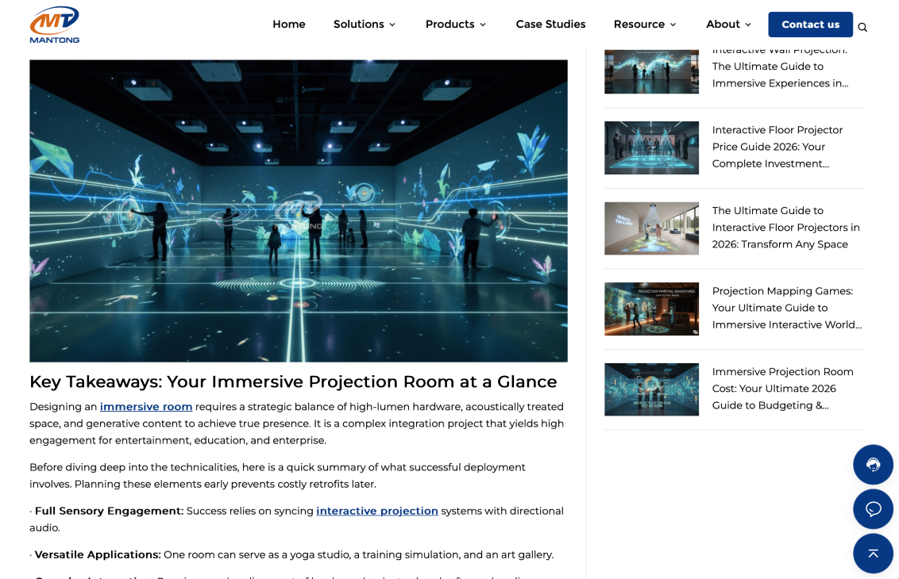
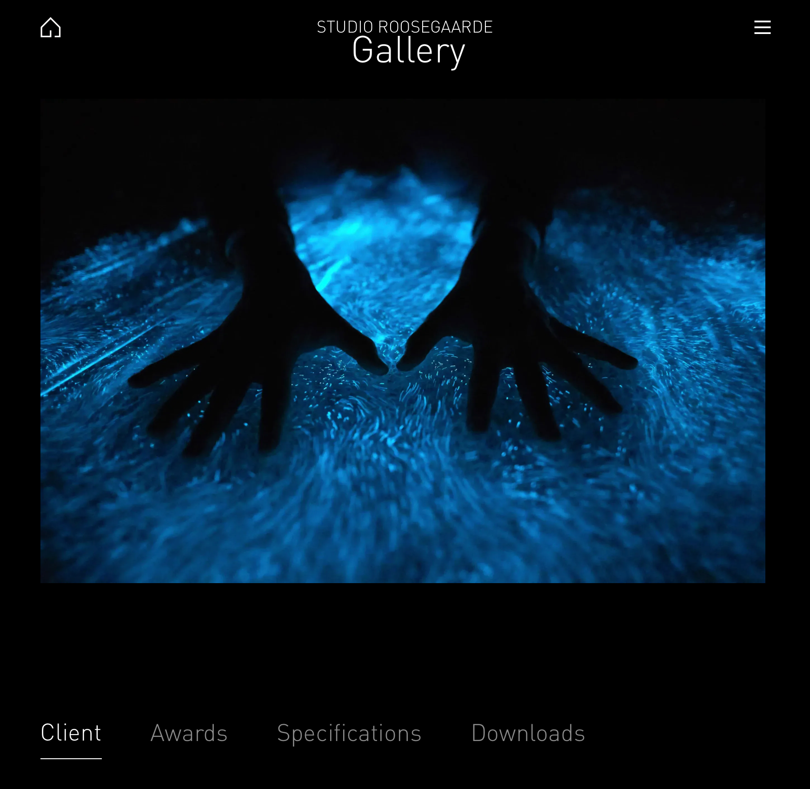
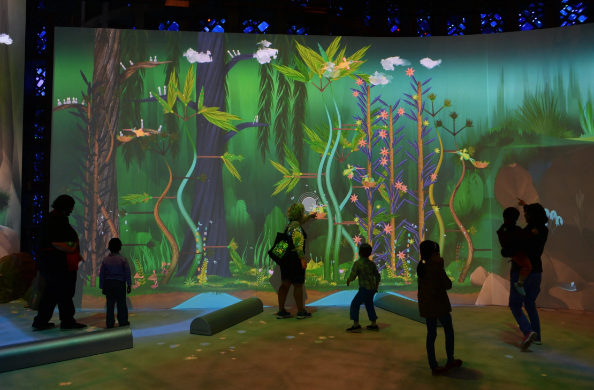
Project 1 Concept
Project 1 Concept
ART Path — Gesture → Visual (Kinect + TouchDesigner)
Concept:
My project concept is an interactive artwork using Kinect, TouchDesigner and a projector. Participants use hand gestures to gradually reveal and move the visuals created in TouchDesigner.
Interaction:
My idea is to use Kinect to track the movements of my hands and send the motion data to TouchDesigner to control the school of fish on the screen. The screen initially displays a deep, dark ocean; when I clench my left fist, a school of glowing fish gradually appears. At the same time, I can control the position and swimming direction of the entire school by moving my right hand. The fish will respond smoothly to my movements and maintain a certain distance from one another as they move, creating a natural school-swimming effect. Finally, the image is projected onto a wall, creating a connection between my body movements and the digital lifeforms in the projection. These are the interactive effects I plan to implement, though I still need to set up the connections and conduct testing.
Artistic Exploration:
My project explores darkness, hidden life, and the relationship between bodily gestures and digital environments. By contrasting a deep, dark ocean background with schools of glowing fish, I aim to express the transformation of life from concealment to revelation. By controlling the schools of fish through gestures, I seek to explore how bodily movements translate into visual changes, allowing the digital ocean to take on a sense of life that responds to movement.
Inspiration:
Studio Roosegaarde's "GLOWING NATURE" inspired me to reflect on the connection between bodily movement and luminous life forms. I hope to translate this inspiration into a digital format, using Kinect gesture tracking, schools of glowing fish, and projections to explore how movement reveals hidden life and influences its motion.
Next Steps:
I will first connect the Kinect to TouchDesigner to test hand tracking and left-hand fist recognition, and then link the movement of my right hand to the movement of the entire school of fish. Afterward, I will refine the dark ocean background, the fish's glow effects, and their swimming animations, and test the wall projection. I will focus on checking whether the gesture recognition is stable, whether the visual response is clear, and whether the fish's movements appear natural.
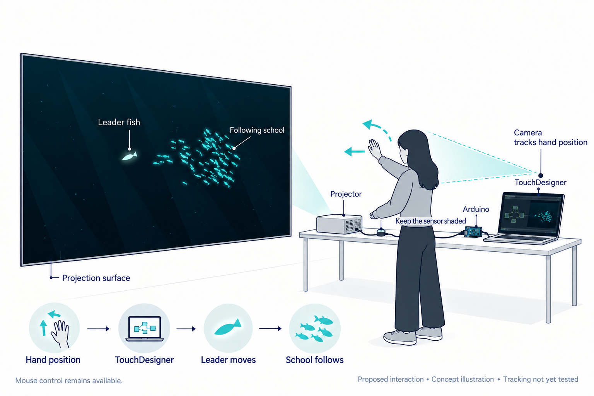
Powered by w3.css